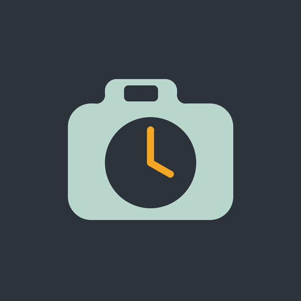
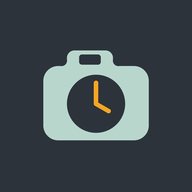

Start
––
01Verzögerung
20s


LagLabBewegungsanalyseWelche Videos sollen gelöscht werden?
Am Fernseher den Zoom einstellen. Dann den Rahmen verkleinern, bis auf dem Fernseher alle vier Ecken ganz zu sehen sind.